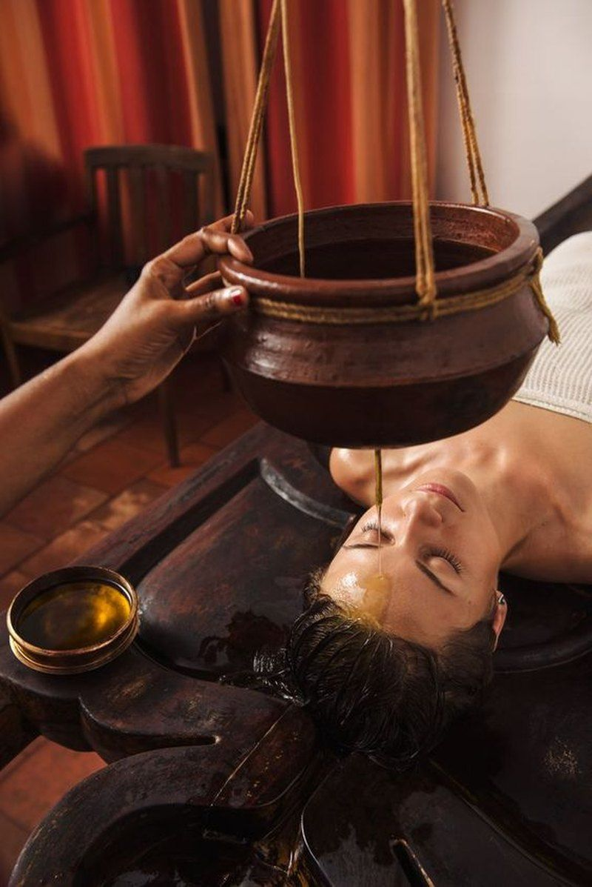

Ayurvedic doctor consultation, in Karnal or online
Meet an experienced Ayurvedic doctor for a full assessment of your body type, digestion and the concern that brought you. Visit Sector 6 or consult from home.
Online Ayurvedic consultation across India
Not in Karnal? Consult Dr. Arora by phone or video from any city. Ayurvedic assessment depends on careful questions and observation of the eyes, tongue, nails and skin, so a live call works well for most concerns.
- Pay online and hold your slot
- Share a short health form and reports beforehand
- Talk to the doctor himself, in English or Hindi
- Receive a written plan with diet, routine and herbal guidance
What we look at in your assessment
Ayurvedic doctors do not only read a lab report. We build a picture of the whole person.
Your body type
The natural balance of Vata, Pitta and Kapha you were born with.
Your current imbalance
Which dosha has moved out of balance now, and why.
Visual examination
Eyes, tongue, nails, skin and build, observed in person or on video.
Digestion and metabolism
Appetite, bowel habits and energy after meals, the base of most chronic problems.
Sleep, stress and habits
Your daily rhythm, food timing, work pressure and mental load.
What happens next
Diet, lifestyle, herbal guidance and therapies, in an order you can manage.
Prefer to visit? Our clinic is in Sector 6, Karnal
For Panchakarma, Shirodhara and other therapies, you need to be here in person. Many patients begin with a consultation, then move to a therapy plan in the clinic.
- In-clinic consultation by appointment
- Seamless step from consultation to therapy
- Follow-ups in person or on WhatsApp


Medical astrology (Jyotish) add-on
Some patients like to look at their health through a Vedic astrology lens as well. After a medical consultation, you can add a Jyotish health reading that considers timing and tendencies.
The astrology add-on is complementary. It is offered only after a medical consultation and is never a substitute for medical advice.
Ask about the add-onConsultation fees
Free 10-minute call available if you are unsure which option fits.
Express
- One concern, reviewed clearly
- Dosha pointers for your body type
- Diet and daily routine tips
Standard
- Detailed history and Darshan assessment
- Diet, lifestyle and herbal guidance
- WhatsApp support for 3 days
Comprehensive
- Deep review with your reports
- Written Prakriti and Vikriti plan
- Therapy and Panchakarma suitability
- WhatsApp support for 7 days
Premium
- Everything in Comprehensive
- One 15-minute follow-up included
- Panchakarma schedule planning
- WhatsApp support for 14 days
Common questions
Can I consult an Ayurvedic doctor online from outside Karnal?
Yes. Dr. Arora consults by phone and video across India. After you book, you fill in a short health-history form, and the consultation happens at your chosen time.
What happens in the first consultation?
Dr. Arora studies your history, digestion, sleep, energy and routine, and observes your eyes, tongue, nails and skin (Darshan). He then explains your Prakriti (body type) and Vikriti (current imbalance) and gives a plan you can follow.
Do I need to stop my regular medicines?
No. Never stop prescribed medicines on your own. Bring your reports and medicine list, and Dr. Arora will plan around them. Ayurvedic care here supports your treatment; it does not replace your specialist.
Is Panchakarma suitable for everyone?
Not always. Panchakarma is planned only after an assessment of your strength, season, age and condition. It is not advised in some situations, such as pregnancy or severe weakness, so a consultation always comes first.
How do I pay and confirm my slot?
Choose a consultation type, pay the fee online to hold your slot, and we confirm the time on WhatsApp. For in-clinic visits you can also call us on +91 92156 13888.
Do you sell medicines or health products?
No. We are a service-based clinic: consultations, therapies and training. Any herbal or dietary guidance is part of your personal plan.
Ready to talk to an Ayurvedic doctor?
Visit our clinic in Sector 6, Karnal, or consult online from anywhere in India. Tell us your concern and we will find a slot.